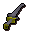

Silverlight

| Config name | silverlight |
| Item id | 2402 |
| Value | 50 gp |
| Weight | 4lb |
| Members | No |
| Tradeable | No |
| Stackable | No |
| Equip slot | righthand |
| Options | Wield |
| Category | weapon_slash |
| Defined in | scripts/quests/quest_demon/configs/demon.obj |
| Equipment stats | Stab att 9, Slash att 14, Crush att -2, Slash def 3, Crush def 2, Magic def 1, Strength 12 |
Silverlight
The magical sword 'Silverlight'.
Sold at
| Shop | Shopkeeper | Stock |
|---|---|---|
| Legends Guild Shop of Useful Items. | 4 |
Quests
Referenced in scripts
scripts/areas/area_varrock/scripts/sir_prysin.rs2scripts/quests/quest_demon/scripts/demon_slayer.rs2scripts/skill_combat/scripts/npc/npc_combat.rs2scripts/skill_combat/scripts/player/player_melee.rs2